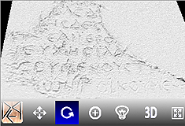
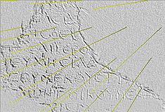

Digital Epigraphy Toolbox
Digital Epigraphy Toolbox is a novel and technologically advanced scientific tool for the effective study and comparative analysis of Greek and Latin inscriptions. It provides archaeologists and epigraphists with a cost-effective and efficient method for 3D digitization of inscriptions based on squeezes (paper casts, impressions of inscriptions on a paper), as well as access to an online dynamic library of 3D inscriptions.
Features: On-line database of 3D inscriptions, 3D rotation, change lighting orientation, zoom in/out, thematic browsing, keyword search, connection with other existing on-line libraries, dynamic and open editing of the epigraphic records by the research community, and many other features.
System requirements: A modern computer with a decent graphics card is recommended (a tablet such as iPad or Surface is more than enough to run the system). The software runs in the majority of popular desktop and mobile web-browsers. No additional plugins necessary. Internet connection is required. The most popular choices of supported browsers are:
Windows: Mozilla Firefox, Chrome, Opera, and Internet Explorer (v.11+).
Mac OSx: Mozilla Firefox, Chrome, Opera, and Safari. (In Safari for OSx it can be enabled from the Preferences menu > Advanced tab > Show Develop menu in menu bar, and then from the Develop menu > Enable WebGL.)
Linux: Mozilla Firefox, Chrome, Opera.
Mobile and Tablets: The software is supported by the majority of web-browsers for iOS, Android or Microsoft Windows 8.1+ devices.
Open source project: Our team supports open-source programming as a form of academic collaboration, and we provide the source code of this software, which can be easily accessed by following directly this link or using the Developer Tools of your browser if you are an expert HTML5 software engineer.

